Рогейн в мире
Двадцать четыре часа с картой и компасом
Рогейн — подвид командного ориентирования на длинные дистанции. За отведённое время (на чемпионатах — сутки) команда из двух–пяти человек сама выбирает, какие контрольные пункты разной стоимости "взять" и в каком порядке. А побеждает та, что наберёт больше баллов и уложится в контрольное время. Вид спорта родился в Австралии из 24-часовых походов студентов Мельбурнского университета, которые устраивались с 1947 года. В 1976-м они превратились в соревнования со своим именем. Чемпионаты мира проводятся с 1992 года, чемпионаты Европы — с 2003-го, и самый первый из европейских прошёл в России, в Перми.
Статья — обзор этого пути от Мельбурна до Каталонии и Карпат. О рогейне в нашей стране подробно рассказывает статья «Рогейн в России», коротко — раздел статьи об ориентировании в России и СССР. Опорой служат истории рогейна, опубликованные Австралийской ассоциацией рогейна, Международной федерацией рогейна (IRF) и Федерацией рогейна России, правила IRF и её бюллетени, таблицы чемпионатов мира и Европы в Википедии и, конечно, календарь O-Maps, где у каждого чемпионата указаны число команд, победители и медали россиян, и карты рогейнов в архиве. Все упомянутые в статье люди собраны в указателе имён в конце.
- Родина
- Мельбурн, Австралия: 24-часовые походы — с 1947, рогейн как вид спорта — с 1976
- Название
- по именам организаторов: Ro(d) + Gai(l) + Ne(il) Phillips
- Федерации
- Австралийская — с 1979; Международная (IRF) — с 1989 (зарегистрирована в 2000, федерацией национальных организаций стала в 2010)
- Чемпионаты
- мира — с 1992 (19 до 2025 года), Европы — с 2003 (20 проведённых, чемпионат 2022 года отменён)
- Рекорд
- 426 команд, 907 участников — чемпионат мира 2017 года в Латвии
- Главные районы
- Виктория и другие штаты Австралии, Новая Зеландия, Британская Колумбия, Чехия, Эстония и Латвия, Каталония, Карпаты, Пермь и Псковщина
- Архив O-Maps
- все 39 проведённых чемпионатов мира и Европы, 658 рогейнов в календаре и 406 карт рогейнов в архиве (на 14 ноября 2026 года; все числа O-Maps — на эту дату)
Места на карте
Где проходили соревнования, о которых рассказывает статья. Точка стоит там же, где событие на карте календаря O-Maps — в его координатах или в центре его карты, поэтому у многодневных стартов точек несколько. Цвет точки показывает, когда место впервые появляется в статье, число в кружке — сколько рядом точек. Значок 📍 в тексте ведёт к месту на этой карте.
Все места списком
1947–1975: двадцатичетырёхчасовые походы австралийских студентов
Начало обычно отсчитывают от 1947 года, когда Мельбурнский университетский клуб альпинистов (Melbourne University Mountaineering Club) провёл первый суточный поход-состязание. По истории, напечатанной в бюллетене Викторианской ассоциации рогейна в 1998 году, Билл Бьюшер и Иэн Лесли вызвали на состязание Питера Крона и Джона Макэндрю. Маршрут вёл от Уорбертона до Хёрстбриджа по топографической карте масштаба 1:63 360 (миля в дюйме). Команды шли напрямик, несли еду, но не палатки, а победил сам автор идеи, Бьюшер. История IRF говорит о пяти участниках. С 1956 года прохождение пунктов отмечали «лотерейными билетами», и, поскольку маршрут был линейным, команды сразу знали свои места; соперничество при этом не поощряли — в конце 1950-х прошлогодним победителям даже давали гандикап.
Суточные старты появились и в других университетах. В Аделаиде 24-часовой поход проводят с 1961 года (по истории IRF — с 1962-го, его организовал Тед Лавгроув), с 1964 по 1968 год шли неофициальные межуниверситетские 24-часовые соревнования по ориентированию, а в 1965-м в Голубых горах прошёл первый старт Падди Паллина. Начавшись как трёхчасовой линейный, он со временем стал шестичасовым рогейном. Свободный выбор пунктов — главное отличие будущего рогейна — впервые опробовали аделаидцы в 1961 году, в Аркабе у котловины Уилпена-Паунд. В 1968 году Дэвид Хогг кодифицировал правила, взяв за основу книгу Джона Дисли «Orienteering» с правилами Английской ассоциации ориентирования, и 31 мая 1969 года в районе Блэквуда и Дейлсфорда прошли первые официальные соревнования — с выбором пунктов (score event) и впервые со стандартными призмами ориентирования. С 1972 года скауты-роверы Surrey Thomas Rover Crew ежегодно проводили суточные соревнования, открытые для всех, и история на сайте Федерации рогейна России называет их «катализатором» нового вида спорта.
1976–1985: у вида спорта появляется имя
Апрель 1976 года, Мельбурн: по Википедии, первый рогейн организовали члены Surrey-Thomas Rover Crew. Слово «rogaine» сложено из имён организаторов суточного похода 1976 года — Рода Филлипса, Гейл Дейвис (урождённой Филлипс) и Нила Филлипса (Rod, Gail и Neil). Викторианская ассоциация в своей истории пишет, что слово придумали Род и Нил, а происхождение его больше десяти лет держали в секрете. Род «озорно» намекал то на язык аборигенов, то на шведский. Викторианская ассоциация рогейна, первая в мире, оформилась в 1976 году. Дешёвое обязательное членство и регулярный бюллетень сделали своё дело — через четыре года в ней было больше тысячи членов.
В декабре 1976 года у Талларука прошёл первый чемпионат Виктории, в сентябре 1977-го — первые 12-часовые соревнования. Со временем 12-, 6- и 8-часовые рогейны, по словам ассоциации, «затмили» традиционные суточные. В 1978 году Сью Грайс нарисовала эмблему рогейна. В мае 1979 года у того же Талларука Нил Филлипс и Кристина Арнольд провели первый чемпионат Австралии (его выиграли Дэвид Роулендс и Дэвид Чёрч), и тогда же появилась Австралийская ассоциация рогейна (по истории IRF — в феврале 1979 года, с Викторией как единственным членом). В 1980 году ассоциация выпустила правила чемпионатов, основанные на университетских правилах Хогга, и рогейн пошёл по штатам. В Западной Австралии первый рогейн 20–21 сентября 1980 года в долине Читтеринг собрал 125 участников, а третий чемпионат страны у Тудьея в 1982-м — 261; в Новом Южном Уэльсе ассоциация появилась в июле 1983 года, к 1993-му рогейн прижился в Австралийской столичной территории, Южной Австралии и Квинсленде. Книга Нила и Рода Филлипсов «Rogaining» учит обращению с картой и компасом, выбору пути и ночной навигации. Роулендс, девятикратный чемпион Австралии, вспоминал, что многому научился у них, выступая с ними в одной команде.
1986–1994: Канада, США и Новая Зеландия

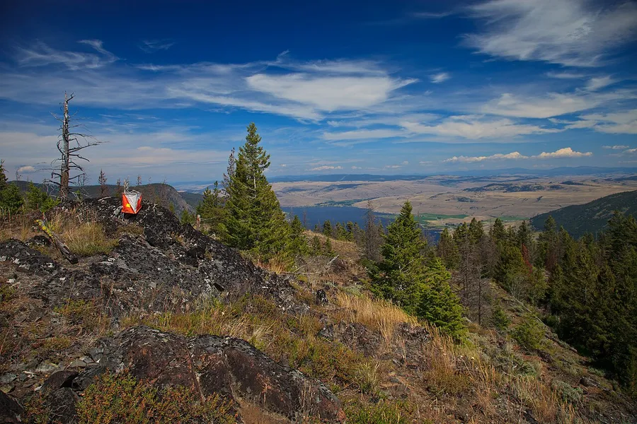
За океан рогейн привёз канадский ориентировщик Джим Форс, побывавший в Австралии во время чемпионата мира по ориентированию 1985 года в Бендиго📍. По истории Австралийской ассоциации, первый североамериканский рогейн прошёл в сентябре 1986 года у озера Минневанка в Альберте: 89 участников в 30 командах (по российской версии истории — 80 участников). Через год в Альберте стартовали уже больше двухсот человек, в 1988-м первый рогейн прошёл в Британской Колумбии, у Камлупса. В США первый рогейн организовал Боб Реддик — в мае 1989 года у Бак-Медоуз в штате Вашингтон (112 участников, 52 команды). За первые десять лет американцы провели почти 150 рогейнов в 19 штатах. Реддик учредил награду «Орден геодака», которую вручали с 1994 по 2020 год.
Вершиной этих лет стал «Most Awesome Rogaine» в августе 1990 года у ручья Бобс-Крик в Альберте, устроенный после Азиатско-Тихоокеанского чемпионата по ориентированию: 136 команд, по австралийской истории — из 20 стран (по российской версии — 330 участников из 18 стран). Среди них были чешские ориентировщики, которые через шесть лет начнут рогейн в Европе. Новозеландец Майкл Вуд из клуба Hutt Valley Orienteers, вдохновлённый канадским стартом, в 1991 году провёл первый в Новой Зеландии рогейн — четырёхчасовой, а в январе 1994 года у хребта Писа близ Ванаки прошёл первый чемпионат Новой Зеландии (около 140 участников). 25 июня того же года канадский клуб Sage Orienteering Club провёл первый чемпионат Северной Америки. Дальше рогейн пошёл по другим континентам: Япония (2002), ЮАР (2003), Израиль (2005), Гонконг, где Патрик Нг организовал первый суточный рогейн после участия в 7-м чемпионате мира 2006 года. Старт собрал 663 участника, и Бразилия (2006).
Международная федерация: три даты рождения
Днём основания Международной федерации рогейна (International Rogaining Federation, IRF) её собственная история называет 16 июня 1989 года. В тот день в канадском Калгари прошло учредительное собрание. Президентом стал Нил Филлипс, вице-президентом — Ричард Мэтьюз. Подготовкой занималась группа из восьми человек: четверо австралийцев (Нил и Род Филлипсы, Ричард Мэтьюз, Дэвид Стивенс), двое американцев (Боб Реддик, Пэт Олбрайт) и двое канадцев (Эндрю Ньюсон, Рон Эндрюс). История Австралийской ассоциации рассказывает подробнее и осторожнее: около 1989 года Филлипс и Стивенс создали неформальную группу «Международная федерация рогейна», отчасти чтобы развивать вид по австралийским образцам и не дать поглотить его более крупным организациям. Ассоциация оплатила пособие «Organising a Rogaine», которое написал Род Костиган.
Ориентирование при этом оставалось рядом: в августе 1997 года Международная федерация ориентирования (IOF) включила рогейн и горные марафоны в свою систему как «марафонское ориентирование». В июне 1999 года Нил Филлипс, Найджел Айлотт, Дэвид Роулендс и Ричард Робинсон согласовали устав IRF как союза национальных организаций. В июле 2000 года федерацию зарегистрировали. Ппервым её секретарём стал Род Филлипс. Австралийская ассоциация эту регистрацию тогда не признала и в федерацию не вошла. А окончательно федерацией национальных организаций она стала в апреле 2010 года. Первыми членами были ассоциации Новой Зеландии, Чехии и Австралии, Федерация ориентирования Эстонии и Orienteering USA. Чешская ассоциация, по словам её президента Т. Прокеша, вступила в IRF ещё в 1997 году. По бюллетеню августа 2026 года, в совете IRF десять стран-членов и несколько наблюдателей, а рогейном занимаются более чем в 30 странах. Действующие правила федерации приняты на 1 января 2024 года вместо правил 2017-го.
Правила: команда, баллы и лагерь на всю ночь

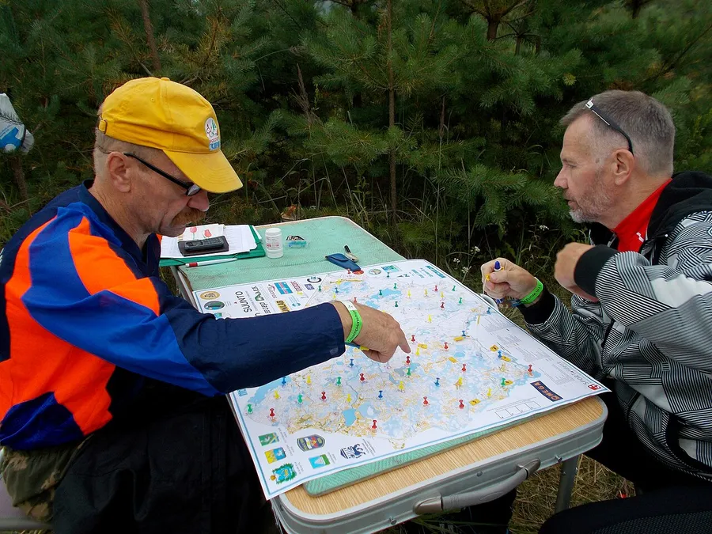
Суть осталась той же, что у мельбурнских студентов: найти как можно больше пунктов за сутки, не теряя друг друга. По правилам IRF команда состоит из двух–пяти человек (на чемпионатах мира — из двух или трёх), её участники всю дистанцию держатся в пределах слышимости голоса, у каждого есть свисток. Чемпионский рогейн длится 24 часа и начинается в полдень или в другое время, при котором светлого времени до темноты и после рассвета поровну. Стоимость пунктов растёт вместе с их номерами, и по старшим цифрам номера, как правило, видно, сколько стоит пункт. «Этот злополучный пункт 104. Десятка!» — вспоминала о чемпионате мира 2016 года Марина Галкина. Результат — сумма баллов за пункты, которые отметили все члены команды, минус штрафы — за опоздание баллы снимают поминутно, а результат команды, опоздавшеё больше чем на 30 минут, аннулируется.
Сердце рогейна — «хэш-хаус» (hash house), лагерь в центре соревнований. По правилам там должны кормить и поить не позже чем через шесть часов после старта и до часа после финиша, а команды могут возвращаться туда в любое время, чтобы поесть, отдохнуть или поспать. Зачёты делятся на мужской, женский и смешанный, а по возрасту — на открытый, молодёжный (до 23 лет), ветеранский (все участники не моложе 45 лет), суперветеранский (55+) и ультраветеранский (65+). Медали разыгрываются во всех сочетаниях пола и возраста. Навигаторы GPS на дистанции запрещены — только карта и компас, но организаторы могут выдать командам трекеры. Кроме суточных, в мире проводят рогейны на 3, 6, 8, 12 и 15 часов, часто одновременно с главной дистанцией, а чемпионаты мира, по Википедии, «всегда длятся 24 часа».
1992–2027: двадцать чемпионатов мира
Первый чемпионат мира прошёл9–10 октября 1992 года у Бичворта📍 в Виктории. Его организовал Джефф Хук, дистанцию поставил Дэвид Роулендс. Среди 194 команд (414 человек) были заметная новозеландская и небольшая американская делегации, а победили Джеймс Рассел и Майкл Уолтерс, на 10 баллов опередив Эндрю и Питера Маккомбов. Дальше чемпионаты шли раз в два года и, по австралийской истории, по кругу «Австралия и Новая Зеландия — Северная Америка — Европа»:
- 1996📍 — гора Синглтон в Западной Австралии (271 команда)
- 1998📍 — ранчо Дуглас-Лейк у Камлупса, где жара доходила до 40 °C
- 2000📍 — Северный Кентербери в Новой Зеландии (в январе, в разгар южного лета)
- 2002📍 — чешская Лесна, первый чемпионат в Европе
- 2004📍 — Биг-Лейк в Аризоне, на высоте больше 2500 м
- 2006📍 — национальный парк Уоррамбангл в Новом Южном Уэльсе (308 команд)

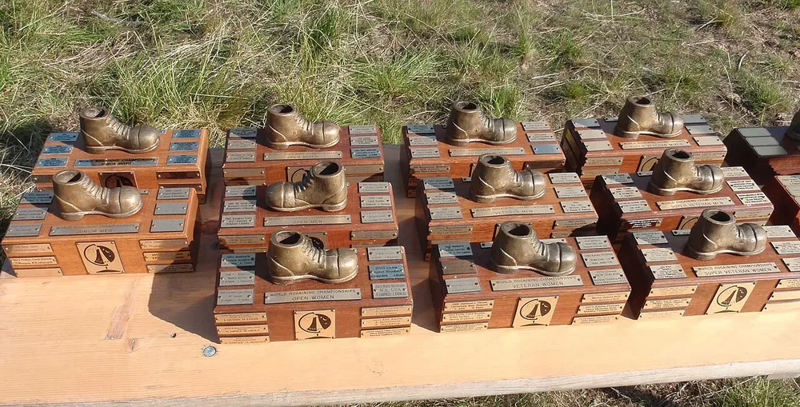
- В 2008 году📍 чемпионат вернулся в Европу, в эстонский национальный парк Карула (339 команд, 749 участников), и впервые его выиграла российская команда — Евгений Домбровский и Павел Шестаков.
- В 2010 году📍 у новозеландского Чевиота первыми были Крис Форн и Марсель Хагенер.
- С чемпионата 2012 года📍 в чешских Рудных горах (333 команды, около 700 участников) начинается эстонская эпоха: братья Сильвер и Райн Энсаар выиграли его, затем чемпионат 2013 года в Алоли📍 и вместе с Тиммо Таммемяэ — чемпионат 2014 года в Блэк-Хиллс📍 (Южная Дакота) — впервые абсолютный (мужской) зачёт выиграла команда из трёх человек.
- 2015📍 — Саариселькя в финской Лапландии (374 команды; победили финны Петтери Муукконен и Ханну-Пекка Пукема)
- 2016📍 — Алис-Спрингс в центре Австралии (Крис Форн выиграл третий титул, с Грейгом Гамильтоном)
- 2017📍 — национальный парк Разна в Латвии, где 426 команд и 907 участников поставили рекорд, а победили латыши Янис Круминьш и Андрис Ансабергс
В 2019 году📍 в каталонской Ла-Молине (386 команд) Тиммо Таммемяэ выиграл второй титул — с Райном Сеепылдом. Следующий чемпионат готовили в Калифорнии на 2020 год, но пандемия его отложила, а в апреле 2021 года IRF и организаторы решили, что у озера Тахо он пройдёт только в 2023-м. Поэтому 17-м стал чемпионат 2022 года в чешском Папршеке📍 (победили испанец Альберт Эрреро Касас и Андрис Ансабергс), а 18-м — чемпионат 2023 года у озера Тахо📍 (130 команд по Википедии): его выиграли Таммемяэ и Сандер Линнус. На обоих не было россиян и белорусов (об этом — в разделе о России), а на чемпионате 2025 года📍 в испанской провинции Бургос, в горах Нейла и Урбион с перепадом высот от 1050 до 2073 м, 351 команда, и россияне, выступавшие в нейтральном статусе, победили: Максим Цветков и Семён Якимов набрали 5530 баллов, больше чем на 200 опередив серебряных призёров — Таммемяэ и Линнуса. 20-й чемпионат мира пройдёт 16–17 сентября 2027 года в хребте Флиндерс📍 в Южной Австралии; организаторы готовы принять до тысячи участников.

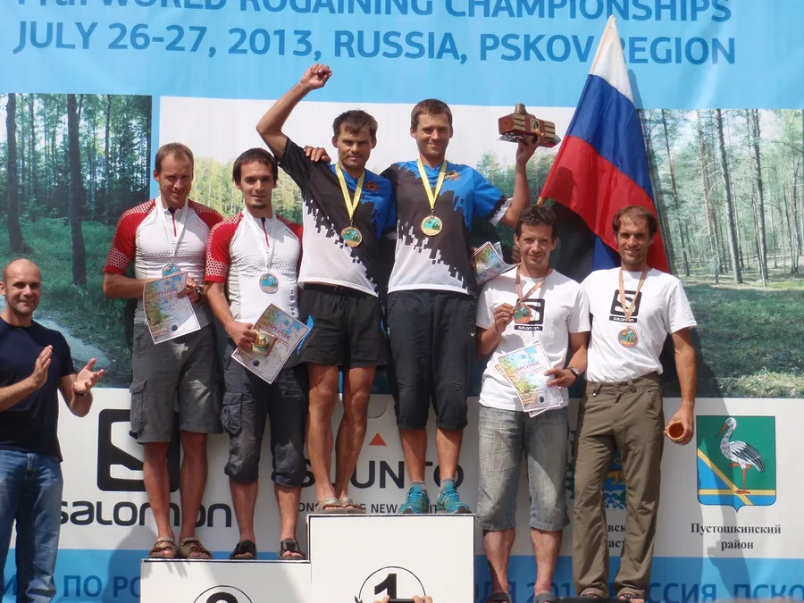
Хозяевами чемпионатов мира за 33 года были десять стран: Австралия (четыре раза), Чехия и США (по три), Новая Зеландия и Испания (по два), Канада, Эстония, Россия, Финляндия и Латвия (по одному). Число команд выросло с 194 в 1992 году до 300–426 на большинстве чемпионатов 2010-х; меньше всего команд (130–137 по разным данным) было на чемпионатах 1998 и 2023 годов, оба раза в Северной Америке. У каждого чемпионата в календаре O-Maps собраны ссылки на сайт, протоколы, карты и, если есть, треки команд.
1990–2010: рогейн приходит в Европу

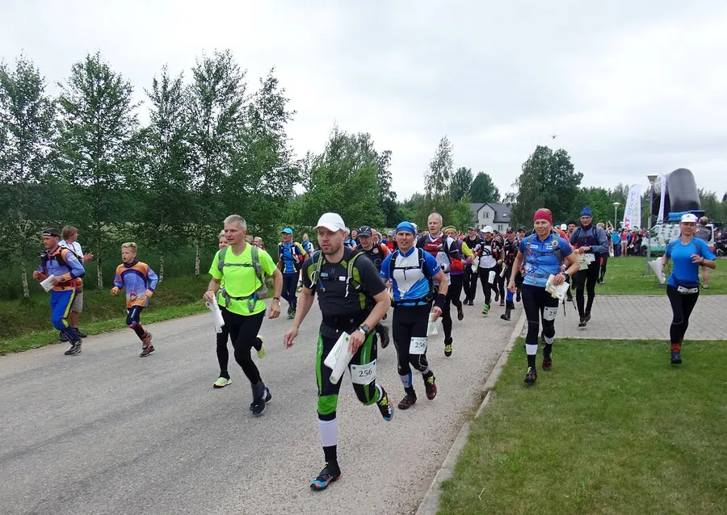
В Европу рогейн пришёл через ориентирование. Чешские ориентировщики из национальной сборной, среди них Ярослав Качмаржик и Томаш Прокеш, в 1990 году выступили на «Most Awesome Rogaine» в Альберте, а в сентябре 1996 года была официально основана Чешская ассоциация рогейна (CAR; её президентом стал Прокеш). Первые соревнования прошли в Бранжеже и Либереце. По истории европейского рогейна на сайте Федерации рогейна России, это были первые рогейны в Европе. Австралийская история называет их стартами по горному ориентированию (Mountain-O), и если так, то первыми чешскими рогейнами оказываются старты 1997 года. Тогда первый чемпионат Чехии (24 и 12 часов) собрал 45 команд, победили чех Мирослав Сейдл и финн Ииро Какко, а ассоциация вступила в IRF. В 2002-м Чехия приняла чемпионат мира.
Затем рогейн появился в Ирландии и Швеции (1998), в России (1999: открытый чемпионат Перми📍, 12 команд, организатор — Герман Шестаков), в Латвии и Литве (по общей сводке — в 2003-м, хотя в латвийском разделе той же истории начало отнесено к 2002 году), на Украине (2004, десятичасовой ночной рогейн под Черновцами), в Германии (2006, Саксония), в Финляндии и Франции (2007), в Испании (2009, Каталония) и Швейцарии (2010). Ирландский клуб Setanta Orienteers с июня 1998 года каждый год проводит суточный рогейн в горах Уиклоу, а в Эстонии первый рогейн провёл таллинский клуб TAOK — в 1999 году по российской истории, в 2000-м (восьмичасовой, 54 команды) по австралийской. Эстонцы же поставили рекорды массовости — 914 участников в Колга в 2006 году (по австралийской истории) и 1157 на рогейне Ягала-Йоа в 2007-м (по российской). На Украине рост вида связан с именем Ефима Штемплера и его коллег, в Финляндии — Тимо Сиролы и Яри Кайи, во Франции — Бруно Маэса, в Каталонии — Филипа Жили (Gili).
2003–2026: чемпионаты Европы

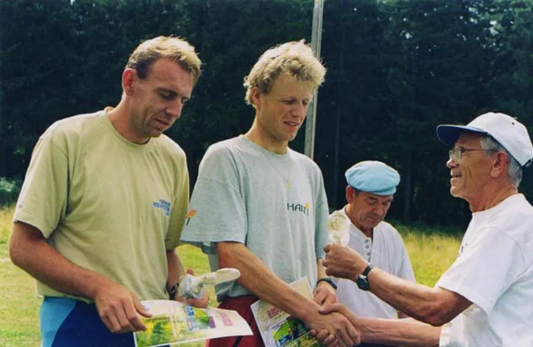
Первый чемпионат Европы провёл под Пермью Герман Шестаков: 16–17 августа 2003 года📍 на старт вышли 40 команд (84 участника) из России, Чехии, Финляндии, Австрии и США. Абсолютными победителями стали чехи Мирослав Сейдл и Петр Боржанек, женский и смешанный зачёты выиграли россияне. Сейдл потом написал для чешского журнала, что старт был в 13 часов, карта — масштаба 1:50 000 с сечением рельефа 10 м, вода — только в центре соревнований: «Рогейн — экстремальный вид спорта, поэтому вода есть только в центре соревнований».
Дальше чемпионат Европы проводили почти каждый год, и он прошёл по всему востоку и северу континента:
- 2005📍 — эстонская Ныва (89 команд; победили Маргус Клементсов и Яанус Реха),
- 2006📍 — Глыбочок под Черновцами (россияне Сергей Ященко и Олег Калинин),
- 2007📍 — латвийская Смилтене (162 команды; Евгений Гаврилов и Евгений Домбровский; у женщин — Алида Абола и Байба Озола),
- 2008📍 — Мичуринское на Карельском перешейке (143 команды; снова Сейдл и Боржанек, а россиянки Анна Бурлинова и Ирина Сафронова — вторые в абсолютном зачёте),
- 2009📍 — Юллас в финской Лапландии (240 команд),
- 2010📍 — Мигово в Карпатах,
- 2011📍 — латвийская Рауна (280 команд, первый европейский титул братьев Энсаар),
- 2012📍 — Молетский район Литвы (Армо Хийе и Лаури Лахтмяэ),
- 2013📍 — каталонская Ла-Льякуна, в январе,
- 2014📍 — эстонская Орава, где Тиммо Таммемяэ и Райт Палло взяли все 98 пунктов и набрали 358 баллов.
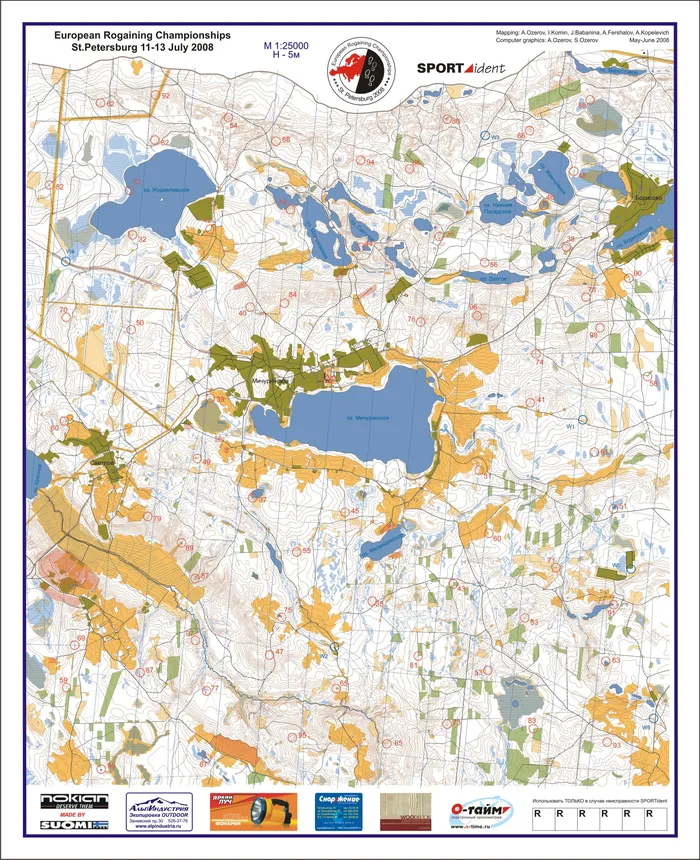
Затем были
- Черне-Удоли📍 в Чехии (2015)
- хребет Аралар📍 в Наварре (2016, победили чехи Радован Чех и Роман Хорына)
- Сан-Джиминьяно📍 в Тоскане (2017, испанцы Альберт Эрреро и Аурелио Оливар)
- Берегомет📍 в украинских Карпатах (2018)
- В 2020-м латвийский📍 перенесли из-за пандемии с июня на август, и из России смогла приехать всего одна команда
- в 2021-м чемпионат принимал эстонский Отепя📍
- 18-й чемпионат Европы должен был пройти в мае 2022 года под Зеркальным📍 на Карельском перешейке, но 13 марта 2022 года его отменили, и в те же дни на той же базе прошли Кубок России по рогейну и чемпионат России по рогейну на велосипедах📍. Номер при этом сохранился.
География чемпионата Европы хорошо видна на диаграмме. Чаще всего его принимали Эстония (четыре раза), Латвия и Украина (по три), никогда — страны Западной Европы, кроме Испании и Италии. Чехия, Эстония, Латвия, Испания, Финляндия и Россия принимали и чемпионаты мира, и Европы.
Чемпионы: от Дэвида Роулендса до Таммемяэ и Линнуса
Первым двукратным чемпионом мира стал австралиец Джеймс Рассел (1992 и 1996), а его партнёр 1996 года Дэвид Роулендс, девятикратный чемпион Австралии, выиграл ещё чемпионаты 2000 и 2002 годов и стал первым трёхкратным. Три титула и у новозеландца Криса Форна (2006, 2010, 2016). Эстонцы выросли из ориентирования и приключенческих гонок: Сильвер Энсаар (1978 года рождения) и его старший брат Райн (1974) выиграли три чемпионата мира подряд (2012–2014) и чемпионат Европы 2011 года, а с командой Estonian ACE Adventure стали чемпионами Европы и по приключенческим гонкам. В 2025 году Сильвер выиграл чемпионат мира ещё и в смешанной категории — с Хелен Юрьо. Тиммо Таммемяэ (1984) трижды чемпион мира (2014, 2019, 2023) и семикратный чемпион Европы (2014, 2018, 2020, 2021, 2023, 2024, 2026). Шесть последних — подряд и с Сандером Линнусом, триатлонистом и ориентировщиком.
У женщин три титула чемпионки мира у Джули Куинн (в женской категории в 2002 и 2006 годах и в смешанной в 2004-м); латвийка Алида Абола, чья бронза 1989 года — единственная медаль чемпионатов мира в советском женском ориентировании, выиграла чемпионат мира 2008 года, чемпионаты Европы 2007 и 2009 годов, а в 2008-м — и чемпионат Европы в смешанной категории (с Петерисом Зариньшем). Эстонки Пийбе Таммемяэ (с 2018 по 2021 год трижды подряд) и Марианн Сулг (2016, 2023, 2026, а в 2022 году — и чемпионат мира) продолжили эстонскую серию. Россиянки Марина Галкина и Нина Михеева выигрывали одновременно в открытой и ветеранской категориях — о них в разделе о России.

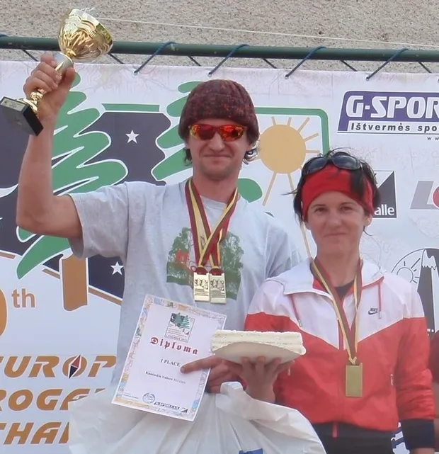

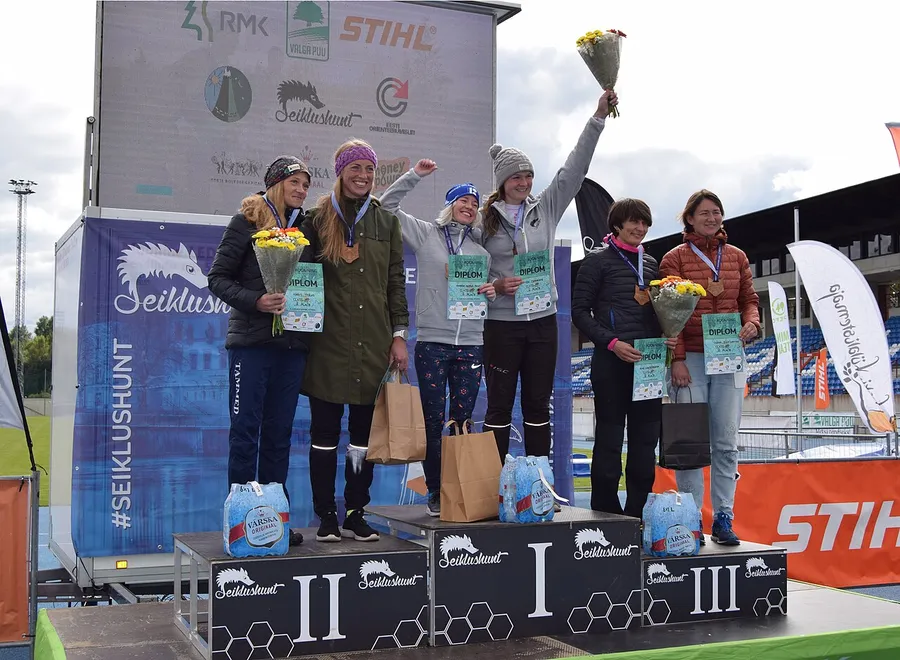
Смешанный зачёт — особая гордость латышей. Гунтарс Манкус трижды выигрывал чемпионат мира в смешанной категории (2002 и 2006 годов — с Раймондсом Лапиньшем и Анитой Лиепиней, 2023-го — с Иритой Пуките), а Лиепиня ещё четырежды становилась чемпионкой Европы в смешанной категории (2005 — с Манкусом, 2012, 2013 и 2015 — с Валтерсом Каминскисом). У эстонцев в смешанной категории выделяется пара Айн Фёдоров — Рееда Туула-Фёдоров, чемпионы Европы 2021 и 2024 годов.
Лыжный, вело-, водный, городской: рогейн во всех видах
Формула «выбери пункты сам» оказалась универсальной. Английская Википедия перечисляет её варианты с собственными именами: снограйн (snogaine) на лыжах или снегоступах, велорогейн (cyclegaine) на горных велосипедах, водный (paddlogaine) на вёсельных лодках, городской (metrogaine) около шести часов по улицам, ночной (nightgaine) с налобными фонарями, боулдергейн, где пункты совмещены со скалолазанием, и даже шестичасовой мото-рогейн. Самый южный рогейн прошёл в феврале 2026 года на полуострове Митчелл в Антарктиде. Четырёхкратный чемпион мира Сильвер Энсаар — один из инициаторов и организаторов Tallinna Linnarogain, городского рогейна в Таллине.

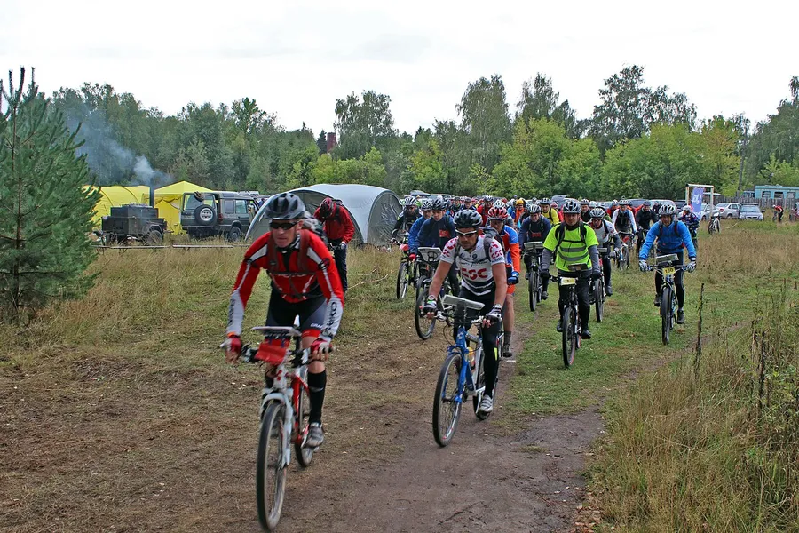
В России рогейны, по рассказу рогейнера Марии Вихревой в «Т—Ж», бывают беговые, велосипедные, водные (на каяках и байдарках), лыжные и ночные, длятся от трёх часов до двух суток, а пункты отмечают электронными чипами, компостерами или фотографией команды у призмы. В календаре O-Maps сейчас почти 700 рогейнов, включая 56 велосипедных, 13 лыжных и 10 водных; остальные — беговые и пешие. В это число входят и два анонсированных старта 2027 года. Под Петербургом лыжный рогейн «100 за 24»📍 предлагал в феврале 2008 года пройти 100 километров за сутки, велосипедная серия BikeAdventure есть в календаре с мая 2005 года, водные рогейны проходят на Вуоксе (весенний водный рогейн📍 2025 года) и Ладоге, а фото-рогейны по районам Петербурга в архиве O-Maps представлены картами с октября 2024 года. Городские рогейны проводит, например, московский «Золотой маршрут». Чемпионаты России разыгрываются и на лыжах (с 2011 года📍) и на велосипедах (с 2013-го📍). Подробнее — в статье о рогейне в России.
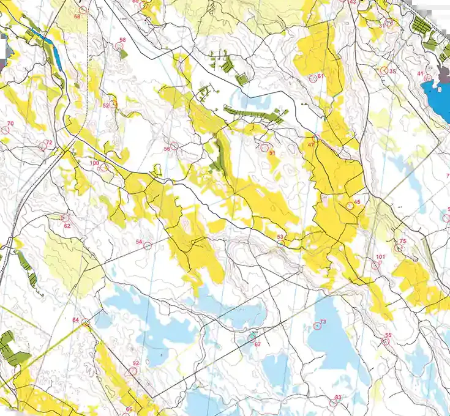
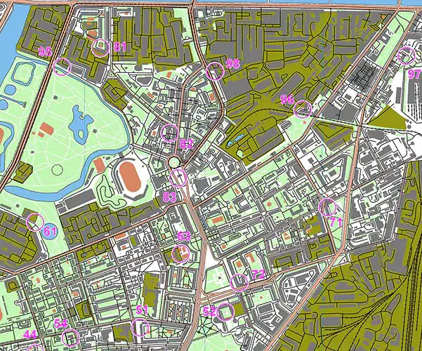
Карта и отметка: от «дюйма в миле» до GPS-трекеров
Рогейн всегда шёл по большим картам. Первые мельбурнские походы 1947 года проходили по топографической карте 1:63 360, а для суточного рогейна, по Википедии, нужно около 250 км² сравнительно ровной местности. Нынешние правила IRF допускают масштаб от 1:24 000 до 1:64 000, на чемпионатах мира — от 1:25 000 до 1:50 000. Карта первого чемпионата Европы📍 была масштаба 1:50 000 с сечением 10 м, а карта первого чемпионата России 2001 года📍 в Перми, сохранившаяся в архиве O-Maps, — топографическая, с нанесёнными кругами пунктов. Пять лет спустя карту чемпионата Европы в Мичуринском📍 уже откорректировали и нарисовали условными знаками спортивных карт (ISOM2000) в масштабе 1:25 000, а карта чемпионата мира в Алоли📍 выглядит как большая спортивная карта для ориентирования. На коротких российских рогейнах карты, по «Т—Ж», обычно масштаба 1:15 000 или 1:20 000.
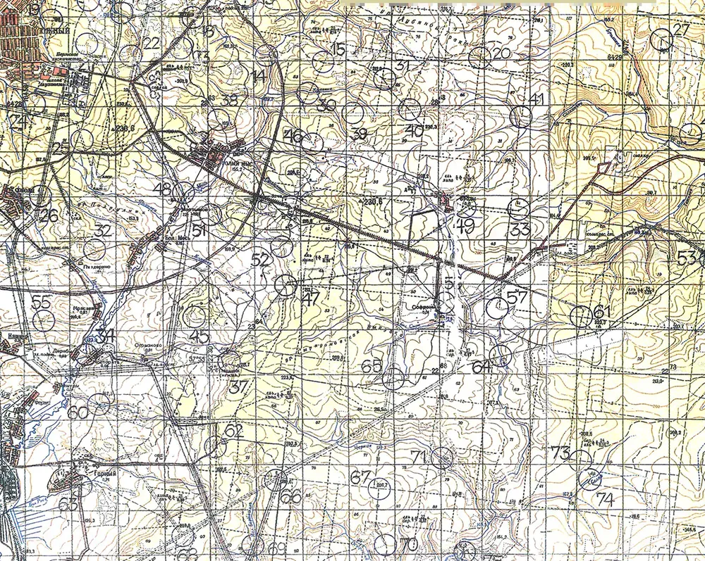
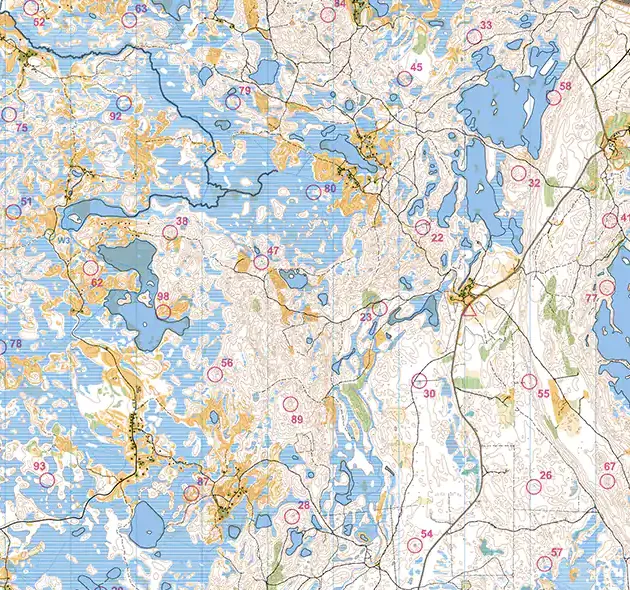
Отметка прошла такой же путь. В 1956 году мельбурнцы отмечались «лотерейными билетами», в 1969-м на пунктах появились призмы ориентирования, в Перми в 2003 году пункт, по описанию Сейдла, обозначали белой полосой шириной 20 см, нарисованной краской прямо на дереве, а отмечались компостером диаметром 6 см на карточке. На чемпионате Европы 2008 года уже работала электронная отметка SPORTident. Сейчас правила IRF предписывают, что на чемпионатах у каждого участника, как правило, электронное устройство отметки на неснимаемом браслете, а пункт засчитывается, только если его отметили все члены команды. GPS-навигация на дистанции по-прежнему запрещена, но GPS пришёл с другой стороны — как средство показать гонку: в календаре O-Maps у 20 из 39 чемпионатов есть ссылки на маршруты или треки команд: первые — на маршруты в RouteGadget чемпионата мира 2006 года📍, а с чемпионата Европы 2013 года📍 появляются записи GPS-трекеров.
Россия на мировом уровне
Российский рогейн начался с поездки — в 1997 году 65-летний Герман Шестаков съездил в США с командой пермских ветеранов ориентирования и привёз брошюру о рогейне, которая свела его с чешскими рогейнерами и IRF (история Федерации рогейна России). За первым рогейном 1999 года📍 последовали первый чемпионат России📍 (2001г, 40 команд, в т.ч. и одна чешская — всё те же чемпионы Сейдл и Боржанек) и первый чемпионат Европы📍. Шестаков погиб 20 сентября 2008 года. Его называют «основоположником рогейна в России». Россия принимала ещё чемпионат Европы 2008 года📍 в Мичуринском и чемпионат мира 2013 года📍 в Алоли — единственный в стране (314 команд, 664 участника).
Российские команды выигрывали абсолютный зачёт чемпионатов Европы 2006 и 2007 годов и чемпионатов мира 2008 и 2025 годов, но особенно сильны были женщины и смешанные команды. Чемпионками мира в женской категории становились Анастасия Галитарова и Ирина Сафронова (2012), Анна Шавлакова с Анастасией Ростовцевой (2013) и с Натальей Абрамовой (2015), Анна Бурлинова и Мария Пляшечко (2019), Екатерина Петухова и Анна Шляпникова (2025), а дважды — Марина Галкина и Нина Михеева (2014, 2017). По календарю O-Maps, у Галкиной 19 золотых медалей чемпионатов мира и Европы в открытой и ветеранской категориях, у Михеевой — 18. Шесть золотых медалей у Андрея Шведова: пять в смешанной категории (чемпионаты Европы 2009–2011, мира 2012 и 2013 годов) и одна ветеранская (чемпионат мира 2016 года).
Самым богатым на медали стал первый, домашний чемпионат Европы📍 — 25 наград, на чемпионате мира в Алоли📍 их было 16. После 2022 года счёт оборвался. 4 апреля 2022 года IRF постановила не проводить чемпионаты в России и Беларуси до конца июня 2023 года и допускать спортсменов этих стран только под обозначением «другая страна» или «международный участник». Затем россиян и белорусов отстранили от чемпионатов мира и Европы до конца 2023 года, и на чемпионат мира 2022 года📍 российские команды допущены не были, как и на чемпионат Европы 2024-го. В 2025 году IRF разрешила россиянам выступать в нейтральном статусе (запрет на проведение чемпионатов в России продлили до конца 2025 года), и первый же старт принёс два золота — Максима Цветкова с Семёном Якимовым и Екатерины Петуховой с Анной Шляпниковой. На чемпионате Европы 2026 года📍 семеро россиян выступали как международные участники и медалей не взяли. Подробнее о российских рогейнах, чемпионатах и картах — в статье «Рогейн в России» и в разделе «Рогейн и другие виды» статьи об ориентировании в России.
Вместо заключения
За полвека рогейн прошёл путь от секретного словечка мельбурнских туристов до вида спорта с международной федерацией, правилами и чемпионатами на трёх континентах. Им занимаются более чем в 30 странах, и центр тяжести давно сместился из Австралии в Европу: девять из последних десяти чемпионатов мира прошли в Европе и США, а абсолютный зачёт чемпионатов Европы последние шесть раз подряд выигрывали Тиммо Таммемяэ и Сандер Линнус. Первое поколение уходит: в 2026 году Род Филлипс, один из тех, чьё имя спрятано в слове «рогейн», оставляет пост секретаря IRF, а бюллетень федерации простился с Бобом Реддиком, начинавшим рогейн в США.
Следующий, 20-й чемпионат мира в сентябре 2027 года вернётся туда, где всё начиналось: в хребет Флиндерс📍, к котловине Уилпена-Паунд, возле которой аделаидцы ещё в 1961 году впервые попробовали сами выбирать порядок пунктов. А история чемпионатов, их карт и треков продолжает собираться в календаре и архиве карт O-Maps.
Статья составлена в октябре 2026 года; актуализирована 14 ноября 2026 года. Это компиляция материалов O-Maps и других источников, перечисленных в конце страницы, при её подготовке использовался ИИ. Если вы заметили неточность или можете дополнить рассказ, напишите нам.
Источники
История рогейна: история из бюллетеня Викторианской ассоциации рогейна (1998), «The development of rogaining — Australia» и «… the world» (Австралийская ассоциация рогейна); «The history of rogaining» (IRF, 2001–2002), история рогейна в Чехии (Т. Прокеш); Федерация рогейна России — история рогейна в мире, в Европе и в России, новости о переносе чемпионата мира 2020 года, решениях IRF 2022 года, чемпионатах мира 2022 и 2025 годов (условия допуска), рассказы и интервью спортсменов, статья М. Сейдла о чемпионате Европы 2003 года и памяти Г. Н. Шестакова; Международная федерация рогейна — сайт, правила (на 1 января 2024 года), решение 4 апреля 2022 года, бюллетень августа 2026 года; о книге Н. и Р. Филлипсов «Rogaining»; положение чемпионата Европы 2008 года; М. Вихрева, «Сколько стоит заняться рогейном» («Т—Ж», 2022); Википедия — Rogaining, World Rogaining Championships, European Rogaining Championships и статьи эстонской Википедии о спортсменах; Международная федерация ориентирования (IOF); фотографии — Wikimedia Commons, категория Rogaining; даты, места, победители, число команд, медали россиян и карты — календарь и архив карт O-Maps (числа о картах и событиях O-Maps в тексте и на диаграммах — по состоянию на 14 ноября 2026 года, архив и календарь продолжают пополняться); статьи O-Maps об ориентировании в России и СССР, в Ленинграде и Петербурге и о рогейне в России.Указатель имён
Люди, упомянутые в статье. Имя ведёт на основную страницу о человеке (отчество, если известно, — во всплывающей подсказке), за ним — другие источники, цифры в конце — места упоминаний в тексте.
- Абола Алида · Wikipedia 1 2
- Галкина Марина 1 2 3
- Домбровский Евгений 1 2 3
- Калинин Олег · о чемпионате Европы 2020 года 1 2
- Клементсов Маргус 1
- Лахтмяэ Лаури 1
- Лиепиня Анита 1 2
- Линнус (Таммемяэ) Пийбе 1 2
- Линнус Сандер 1 2
- Михеева Нина · о чемпионате мира 2017 года 1 2
- Палло Райт 1
- Реха Яанус 1
- Сейдл Мирослав 1
- Сеепылд Райн 1
- Сулг Марианн 1 2
- Таммемяэ Тиммо 1 2 3
- Фёдоров Айн 1
- Хийе Армо 1
- Цветков Максим 1 2
- Шведов Андрей 1
- Шестаков Герман · памяти Г. Н. Шестакова · история рогейна в России 1 2 3
- Энсаар Райн 1 2 3
- Энсаар Сильвер 1 2 3
Посмотреть архив: чемпионаты мира по рогейну в календаре · чемпионаты Европы · IRF на O-Maps · карты рогейнов · все карты O-Maps.